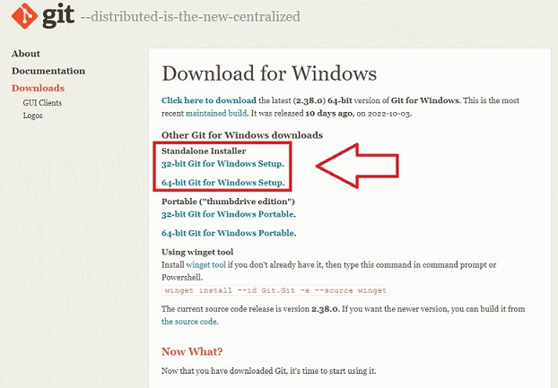
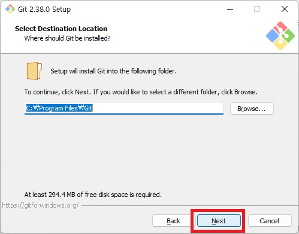
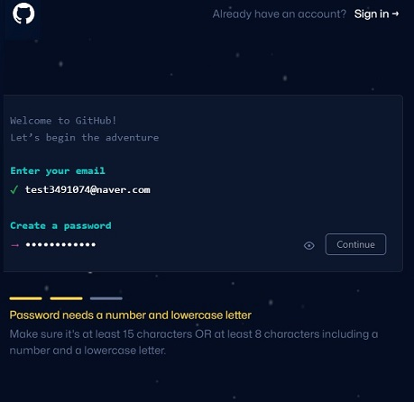
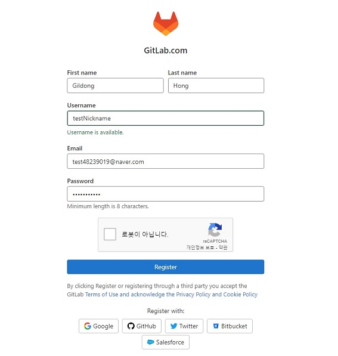
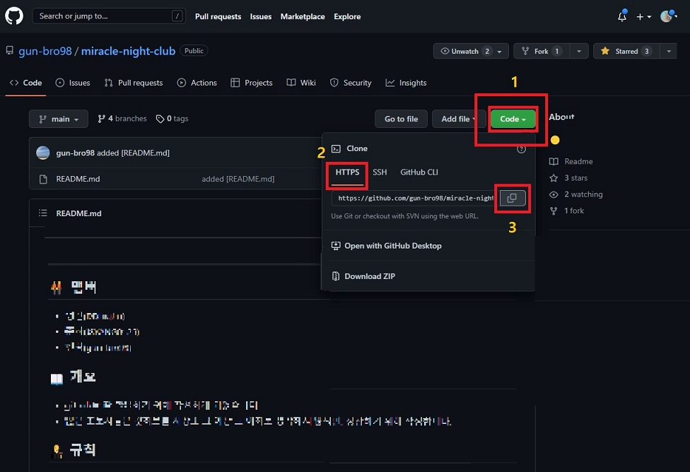
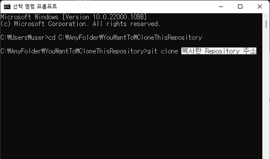
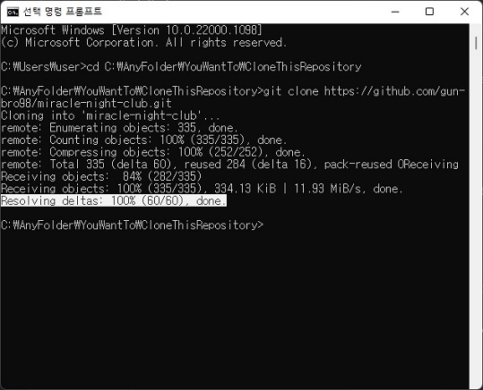
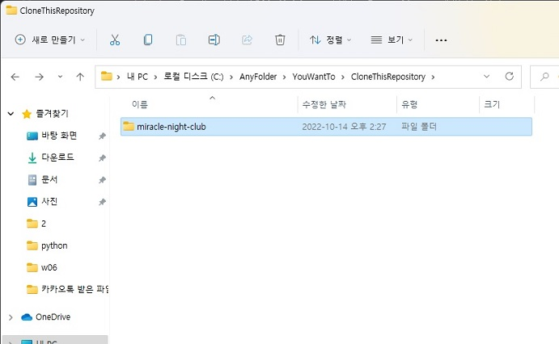

|  |  | ▶ 깃 설치파일 페이지 (git-scm.com/downloads) |
▶ 설치 화면, Next를 눌러 진행한다. |
|  |  | ▶ 깃 허브 (Git Hub) 회원가입 페이지 |
▶ 깃 랩 (Git Lab) 회원가입 페이지 |
|  | ▶ 깃 허브 (Git Hub) 프로젝트 Repository 페이지 |
|  |  | ▶ 폴더로 이동 후, Git Clone 명령어로 가져온다. |
▶ Clone이 정상적으로 완료되면, 다음과 같은 화면이 출력된다. |
|  | ▶ Windows 탐색기에서 가져온 프로젝트를 확인한다. |